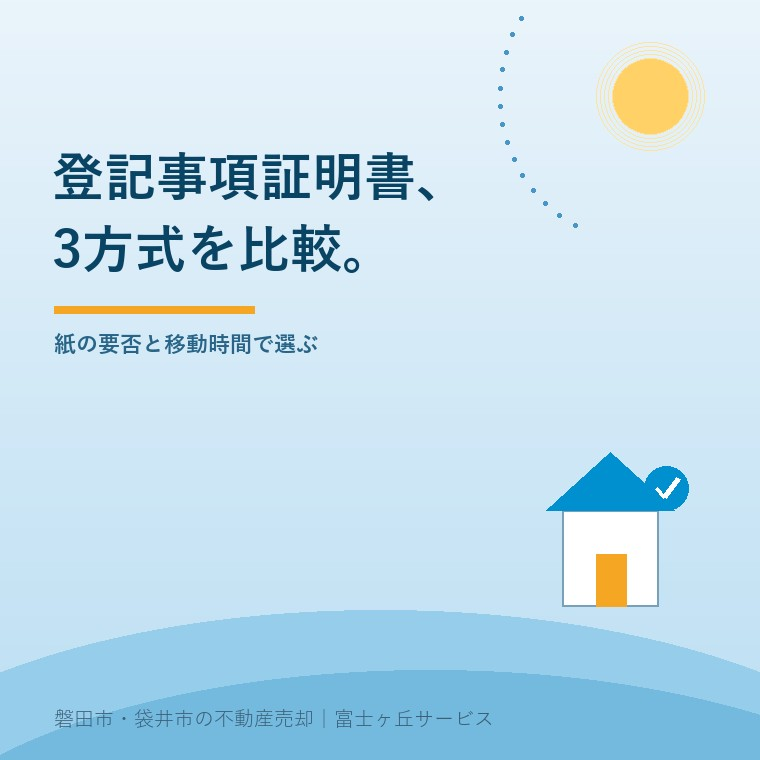

2026年9月9日｜カテゴリ：登記／査定／売却実務

この記事の要点
Q. 登記事項証明書は、窓口600円とオンラインのどちらで取ればよいですか。
A. 提出用の紙を急ぐなら窓口600円、オンライン請求後に窓口受取なら490円、郵送受取なら520円です。オンライン請求でも届くのは紙で、PDFの証明書ではありません。査定前の内容確認だけなら証明文のない登記情報も候補です。提出先が紙を求めるかと、地番・家屋番号を先に確かめ、移動と郵送を含めて選びます。
磐田市・袋井市・森町の物件でも、全国の登記所から請求できます。窓口へ行く前に、固定資産税通知書などで土地の地番と建物の家屋番号を確認します。
査定を頼む前に、実家の名義や抵当権を自分で見ておきたい。ところが、法務局へ行くべきか、オンラインで足りるか、紙が必要かで止まりやすいところです。
名古屋法務局は2026年6月23日、「登記申請・証明書の請求はオンラインでの手続が早くて便利です」を更新しました。掲載された証明書交付手数料比較表は2026年4月1日現在です。指定ページと法務省の案内を2026年9月9日に確認しました。
更新日だけを見て、2026年6月に手数料が変わったとは書けません。確認できる事実は、6月23日更新のページが、4月1日現在の料金と受取方法を整理していることです。
土地・建物の登記事項証明書は、窓口書面請求、オンライン請求後の窓口受取、オンライン請求後の郵送受取から選べます。
| 請求と受取 | 1通の手数料 | 支払と移動 |
|---|---|---|
| 窓口で書面請求・窓口受取 | 600円 | 収入印紙。対応時間内に来庁 |
| オンライン請求・窓口受取 | 490円 | 事前に電子納付。受取時は来庁 |
| オンライン請求・郵送受取 | 520円 | 事前に電子納付。普通郵送料込み |
オンライン請求は「かんたん登記・供託申請」か「申請用総合ソフト」を使います。不動産の登記事項証明書はスマートフォンでも請求でき、電子署名用の電子証明書は不要です。初回は申請者情報を登録します。
電子納付は、インターネットバンキング、モバイルバンキング、Pay-easy対応ATMを使います。オンラインで窓口受取を選んでも、受取時に490円分の収入印紙を出す方法ではありません。
オンライン請求は平日21時まで操作できます。ただし、登記所の受付処理は平日8時30分から17時15分です。17時15分を過ぎた送信分は翌業務日の証明日になるため、21時までに送れば当日受取という意味ではありません。
不動産の登記事項証明書は、オンラインで請求しても電子ファイルでは交付されず、郵送か指定窓口で紙を受け取ります。
オンラインなのは請求と納付です。証明書そのものがPDFになるわけではありません。オンライン窓口受取では、受取人の氏名・住所、17桁の申請番号、請求通数を窓口で伝えます。納付情報画面の印刷か、必要事項を書いたメモを用意します。
画面で登記内容を確認し、PDF保存や印刷ができるのは「登記情報提供サービス」です。不動産登記情報の全部事項は1件330円ですが、法務局の証明文と公印は付きません。原則として、提出先が登記事項証明書を求める場面の代用にはなりません。
| 欲しいもの | 選択 | 先に聞くこと |
|---|---|---|
| 提出用の紙 | 登記事項証明書 | 提出先が原本を求めるか、発行日の条件があるか |
| 名義・抵当権などの確認 | 登記情報提供サービスも候補 | 証明書でなくても目的を満たすか |
| 対応手続用の照会番号 | 登記情報提供サービス | 提出先が照会番号に対応するか |
親の家を売る前に確認する書類と名義で、証明書を取った後に見る項目を整理しています。名義だけでなく、甲区、乙区、共同担保目録の要否も目的に合わせます。
実家の土地1筆と建物1棟を各1通取る場合、1通の差額ではなく2通の合計と移動時間で比べます。
| 方法 | 2通の手数料 | 窓口600円との差 |
|---|---|---|
| 窓口で2通 | 1,200円 | 基準 |
| オンライン請求・窓口受取で2通 | 980円 | 220円安い |
| オンライン請求・郵送受取で2通 | 1,040円 | 160円安い |
オンライン窓口受取が最安ですが、法務局へ受け取りに行きます。郵送は30円高くても来庁が要りません。速達や書留を指定すれば実費が加わり、到着日数には全国一律の保証がありません。
600円を490円に下げても、移動が0円になるわけではありません。車の燃料、駐車、平日の時間まで足せば、110円の差だけで方法を決めるのは雑です。受取場所の近くに用事がある日なら窓口、待てるなら郵送という比べ方が家計に合います。
抵当権が残っているかは乙区で確認します。住宅ローン完済と抵当権抹消は別なので、抵当権とローン残高を分ける確認も合わせて見ます。
登記事項証明書を請求する前に、不動産の所在、土地の地番、建物の家屋番号を特定します。
郵便物に使う住居表示と、登記に使う地番は同じとは限りません。固定資産税通知書、過去の権利証、売買契約書などを机に出します。土地が複数筆なら必要通数も増えるため、「実家一軒だから土地と建物の2通」と決めつけません。
公図や地積測量図は、登記事項証明書とは別の資料です。公図と無料の地図データを比べる記事にある料金を、土地・建物の登記事項証明書の料金へ混ぜないでください。
窓口受取を選ぶ場合は、オンライン請求時に受取場所を指定します。全国の登記所で全国の不動産を請求できますが、特殊な証明や大量請求などでは制限があり得ます。
証明書を取って親や祖父母の名義が残っていたら、査定額の話より相続人と登記の順番が先です。相続はじめ相談室では、名義と手続の入口を売却と分けて整理しています。
2026年6月23日更新の名古屋法務局ページは、窓口とオンラインの料金、受取方法、利用時間を一つの表で比べられる点が良いところです。
オンライン請求後も窓口と郵送を選べます。電子証明書が不要で、スマートフォンから請求できるため、平日の日中に法務局へ行きにくい所有者にも道が残ります。
その上で、私は「安いからオンライン」を最初の結論にはしません。証明書が要るのか、内容を見るだけでよいのかを表の前に決めないと、330円、490円、520円、600円の数字だけが独り歩きします。
大石浩之（磐田市／不動産業）として、私は査定前に全員へ紙の証明書を取ってもらうか迷います。名義と抵当権の確認だけなら登記情報で足りることがあります。一方、相続や融資の提出が近いなら紙を取り直す手間が出ます。私は提出先と日程を聞き、必要な物だけ取るよう案内します。
磐田市・袋井市・森町の実家で登記事項証明書を取るなら、紙の要否、物件番号、受取日を今日の確認欄にします。
今日、売却を決める必要はありません。登記の現状が一枚分かれば、査定を頼むか、相続登記を先にするか、抵当権を確認するかが見えます。ふじがおか実家カルテでは、公開情報と手元資料を照合し、次に誰へ確認するかを整理します。
登記事項証明書の取得方法と料金について、所有者から出やすい3問を2026年4月1日現在の料金で答えます。
土地・建物の登記事項証明書は、通常1通につき法務局窓口で書面請求すると600円です。オンライン請求後に窓口で受け取ると490円、普通郵便で受け取ると郵送料込みで520円です。速達や書留などを指定する場合は実費が加わります。
受け取れません。不動産の登記事項証明書は、オンラインで請求しても、受取物は郵送または法務局窓口で交付される紙です。画面表示やPDF保存ができる登記情報提供サービスには証明文と公印がなく、提出用の証明書の代わりにはならないのが原則です。
不動産の登記事項証明書は誰でも請求できます。委任状も原則不要です。ただし、住居表示だけでは土地や建物を特定できない場合があります。固定資産税通知書などで地番・家屋番号を確認し、証明書の種類、通数、受取方法を決めてから請求してください。

この記事を書いた人：大石浩之（宅地建物取引士）
磐田市で不動産業を営み、査定額を出す前に登記名義、抵当権、道路、境界を確認します。証明書を取ること自体を目的にせず、売主とご家族が次に誰へ何を確認するかまで整理します。プロフィール
ふじがおか実家カルテ｜固定資産税通知書だけでも相談可
紙を取る前に、見る項目を決めます。
名義、共有、抵当権、土地と建物の数を整理し、証明書、登記情報、公図のどれが要るかを一枚にします。
登記事項証明書の手数料、オンライン請求、受取方法、登記情報との違いは、次の公式案内で確認しました。
本記事は2026年9月9日時点の公表資料と、2026年4月1日現在の手数料表に基づく一般的な説明です。料金、利用時間、受付場所、郵送方法、必要通数、証明書の種類、提出先が求める発行日、照会番号の可否は変わることがあります。税務、登記、相続、抵当権抹消、提出書類の個別判断は、税理士、司法書士、土地家屋調査士、管轄法務局、提出先などの専門家に確認してください。
富士ヶ丘サービス株式会社／静岡県磐田市見付5789番地1／TEL:0538-31-3308／静岡県知事 (2) 第14083号／代表取締役・宅地建物取引士 大石 浩之